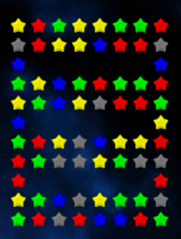
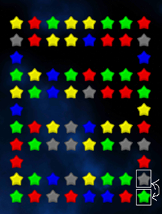
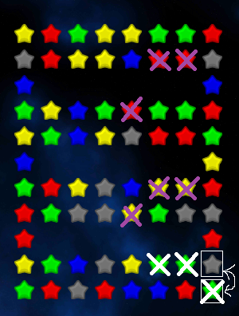
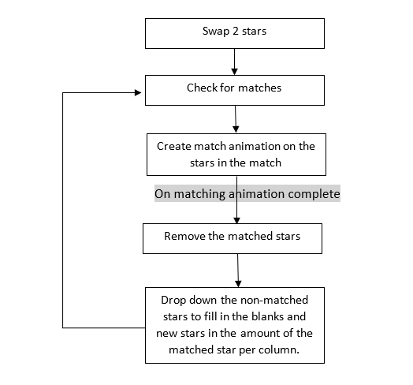
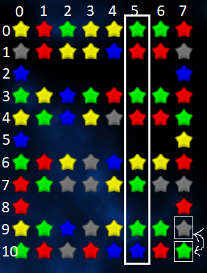

Match 3 - Matching Algorithm
Intro
Ever wonder how matching in a match 3 game works? Let’s try and break it down together. Lets assume that this is the board shape at the start of the game.  Lets notice that the shape of our tiles are stars and in the rest of the article I'll be referencing the stars as the tiles. We will be supporting board shapes that are of any shape and just rectangular.
Rules
Here are basic rules that must always hold regardless of any matching: 1. We must preserve the shape of the board; in other words, we can’t have stars placed where the there aren’t stars there currently. 2. Stars fall from top to bottom according to their distance. No star can overlap another star. 3. All positions that have a star in them must always have a star in them - no empty spots that didn’t exist as part of the initial board shape.
Simulation
Let’s simulate a scenario and explain the algorithm afterwards through it. Flip between the marked grey and green stars:  • Notice this creates a match of 3 green stars with the other 2 green stars in the row from the bottom (marked with a white X). • Let’s also notice that after the match of theses 3 green stars, 2 more matches of 3 stars are triggered (marked with a pink X).  Recap: We flipped the corner green star with the grey star above it. This triggered a match of 3 green stars. This caused all the tiles above the match to fall so that 2 additional matches were triggered of 3 yellow stars and 3 red stars. This triggered the tiles again to fall properly to fill in the board shape (maybe even more matches were triggered afterwards). • Are you noticing any loops? Let’s illustrate the full process: 
Algorithm
Let’s dive into the actual logic of dropping down tiles: Every star on the board has its row and its column index. 1. Per column that includes matched tiles: a. Create a list of the rows from the lowest row matched that need to have tiles in them regardless of the matches done. b. Iterate from the lowest row of a matched tile till the top tile in the column: i. If this tile isn’t a matched tile and it can move: 1. Move it down to the next row in the list created in (a). c. for every tile matched in this column: i. Create a new tile ii. Move it down to the next row in the list created in (a).
Example
 Lets observe the marked column 5. After the swap of the corner green tile with the marked grey tile and the creation of the match of 3 green tiles, we now removed the green star at column 5 and row 9. Step (a): Creation of the list [9, 7, 6, 4, 3, 1, 0] Step (b): 1. Move the star from row 7 to row 9 2. Move the star from row 6 to row 7 3. Move the star from row 4 to row 6 4. Move the star from row 3 to row 4 5. Move the star from row 1 to row 3 6. Move the star from row 0 to row 1 Step (c): 1. Create a new star 2. Move the new star to row 0 Notice that rows 8, 5 and 2 don’t need to have stars in them so they aren’t included in the list created in step (a). In order to have all the columns drop together, we completed the described process for column 5, 6 and 7 together.